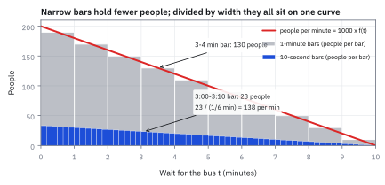
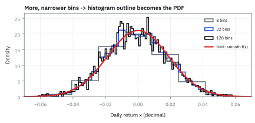
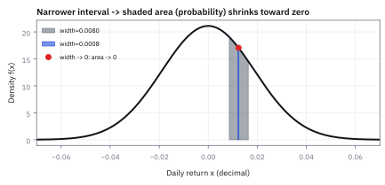
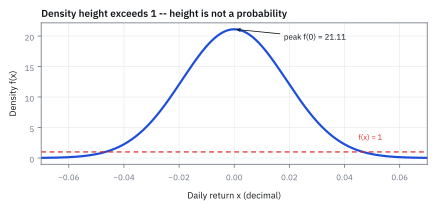
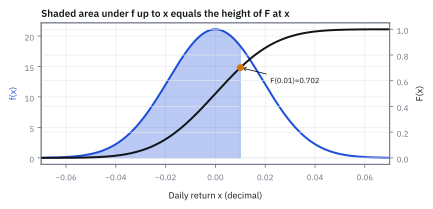

1.8 Continuous Random Variables and the Probability Density Function (PDF)
โอกาสของช่วงมาจากพื้นที่ใต้เส้น ไม่ใช่ความสูงที่จุดเดียว
จับเวลารอรถเมล์ของคน 1,000 คน แล้วทำแท่งช่องละ 1 นาที แท่ง 3 ถึง 4 นาทีมี 130 คน ถ้าหั่นเป็นแท่งช่องละ 10 วินาที แท่ง 3:00 ถึง 3:10 จะมีกี่คน และแท่งที่เตี้ยลงแปลว่าคนรอน้อยลงไหม?
เฉลย: ราว 23 คน แท่งเตี้ยลงราวหกเท่าเพราะช่องแคบลงหกเท่า ไม่ใช่เพราะคนหายไป ทั้งกราฟยังมี 1,000 คนเท่าเดิม ถ้าเอาจำนวนคนหารความกว้างของแท่ง ได้ 23 หาร 1/6 นาทีเท่ากับราว 138 คนต่อนาที ใกล้กับ 130 คนต่อนาทีของแท่งหนึ่งนาที
ตัวเลข ‘คนต่อนาที’ ที่ไม่เปลี่ยนตามความกว้างแท่งนี้คือความคิดทั้งหมดของหัวข้อ มันชื่อ Probability Density Function (PDF) และใช้กับทุกอย่างที่วัดละเอียดได้ไม่รู้จบ เช่นเวลา ราคา และผลตอบแทน
ศัพท์ที่ใช้ในหัวข้อนี้
- continuous random variable
- ค่าที่ยังไม่รู้ล่วงหน้าและวัดละเอียดได้ไม่รู้จบ เช่นเวลารอ 3.4172 นาที หรือผลตอบแทน 1.2345% ใช้กับของที่ไม่ได้มาเป็นค่าแยกชิ้นแบบลูกเต๋า
- histogram
- กราฟแท่งที่นับว่าข้อมูลตกในแต่ละช่องกี่ตัว ใช้ดูรูปร่างของข้อมูลก่อนสร้างเส้นโค้ง
- Probability Density Function (PDF)
- เส้นโค้ง f(x) ที่บอกโอกาสต่อความกว้างหนึ่งหน่วยรอบแต่ละค่า เหมือนคนต่อนาที ใช้หาโอกาสของช่วงด้วยการวัดพื้นที่ใต้เส้น
- Cumulative Distribution Function (CDF)
- พื้นที่สะสมใต้ PDF ตั้งแต่ปลายซ้ายถึงจุดที่เลือก ใช้หาโอกาสของช่วงด้วยการลบค่าที่สองขอบ (สร้างเต็มในหัวข้อ 1.1)
- density
- ปริมาณต่อความกว้างหนึ่งหน่วย เช่นคนต่อนาที หรือคนต่อตารางกิโลเมตร ใช้เทียบช่องที่กว้างไม่เท่ากันได้ และเกิน 1 ได้
- volatility
- ขนาดการเหวี่ยงของผลตอบแทน วัดเป็น standard deviation ใช้เป็นไม้บรรทัดของแกนนอน
- standard deviation
- รากที่สองของ variance ใช้บอกความเหวี่ยงในหน่วยเดิม (สร้างเต็มในหัวข้อ 1.4)
- z-score
- ระยะห่างจากค่าเฉลี่ยวัดเป็นจำนวนเท่าของ standard deviation ใช้เปิดอ่านความสูงและพื้นที่ของระฆังมาตรฐาน
- Normal distribution
- รูปทรงระฆังคว่ำที่สมมาตร ใช้เป็นแบบจำลองหยาบ ๆ ของผลตอบแทนรายวันในหัวข้อนี้ (สร้างเต็มในหัวข้อ 1.9)
- basis point (bp)
- หนึ่งในร้อยของหนึ่งเปอร์เซ็นต์ คือ 0.01% ใช้บอกขนาดผลตอบแทนหรือความกว้างของช่วงที่เล็กมากโดยไม่ต้องเขียนทศนิยมยาว
- tail risk
- โอกาสของผลที่แย่มากทางปลายซ้ายของกราฟ ใช้ตั้งขนาดพอร์ตและเงินกันชน
สัญลักษณ์ที่ใช้ในหัวข้อนี้
| สัญลักษณ์ | ความหมาย | หน่วย |
|---|---|---|
| $T$, $t$ | เวลารอรถเมล์ที่ยังไม่รู้ และค่าเวลาหนึ่งบนแกนนอน | นาที |
| $X$, $x$ | ผลตอบแทนรายวันที่ยังไม่รู้ และค่าหนึ่งบนแกนนอน | ทศนิยม เช่น 0.01 คือ 1% |
| $f(x)$ | PDF คือความสูงของเส้นโค้งที่ $x$ เป็นโอกาสต่อความกว้างหนึ่งหน่วย | ต่อหนึ่งหน่วยของ $x$ |
| $F(x)$ | CDF คือพื้นที่ใต้ $f$ จากซ้ายสุดถึง $x$ | 0 ถึง 1 |
| $a$, $b$ | ขอบซ้ายและขอบขวาของช่วงที่ถาม | หน่วยเดียวกับ $x$ |
| $\varepsilon$ | ความกว้างของแถบแคบรอบจุดที่สนใจ | หน่วยเดียวกับ $x$ |
| $\sigma$ | volatility รายวัน | หน่วยเดียวกับ $x$ |
| $z$ | z-score ของค่าหนึ่ง | — |
| $\phi(z)$, $\Phi(z)$ | ความสูง และพื้นที่ทางซ้าย ของระฆังมาตรฐานที่ $z$ | —, 0 ถึง 1 |
ที่มาที่ไป: เมื่อผลลัพธ์นับไม่ได้ วิธีนับแบบเดิมก็ใช้ไม่ได้
หัวข้อก่อน ๆ ใช้ได้ดีเมื่อผลลัพธ์แยกเป็นค่า ๆ เช่นชนะหรือแพ้ ผิดนัดกี่ราย แต่เวลารอ ราคา และผลตอบแทนเป็นค่าต่อเนื่อง ถ้าถามว่าโอกาสที่ผลตอบแทนเท่ากับ 1.37% พอดีทุกหลักเป็นเท่าไร คำตอบคือศูนย์ ซึ่งฟังดูเหมือนระบบพัง
ทางออกคือเปลี่ยนคำถามจากค่าจุดเดียวเป็นช่วง และเปลี่ยนวิธีตอบจากการนับเป็นการวัดพื้นที่ใต้เส้น ความสูงของเส้นจึงไม่ใช่โอกาสอีกต่อไป มันคือโอกาสต่อความกว้าง แบบเดียวกับคนต่อนาทีในคำถามเปิด
โจทย์: ป้ายรถเมล์ 1,000 คน แท่งละ 1 นาที
| เวลารอ (นาที) | 0–1 | 1–2 | 2–3 | 3–4 | 4–5 | 5–6 | 6–7 | 7–8 | 8–9 | 9–10 |
|---|---|---|---|---|---|---|---|---|---|---|
| จำนวนคน | 190 | 170 | 150 | 130 | 110 | 90 | 70 | 50 | 30 | 10 |
ข้อมูลสมมติ: รถมาถี่พอที่คนส่วนใหญ่รอไม่นาน และไม่มีใครรอเกิน 10 นาที ทุกแท่งลดลง 20 คน รวมกันได้ 1,000 คนพอดี
ขั้นที่ 1 — แท่งหนึ่งแท่ง: พื้นที่คือโอกาส ความสูงคือโอกาสต่อนาที
เอาจำนวนคนในแท่งหาร 1,000 ได้โอกาสที่คนหนึ่งจะรอในช่วงนั้น แล้วหารความกว้างของแท่งอีกครั้ง ได้โอกาสต่อนาที ทำทั้งแท่งหนึ่งนาทีและแท่งสิบวินาที
แท่งหนึ่งนาทีมีโอกาส 0.13 แท่งสิบวินาทีมีโอกาสแค่ 0.023 เพราะแคบกว่า แต่พอหารความกว้าง ทั้งคู่ได้ราว 0.13 ถึง 0.14 ต่อนาที ตัวเลขต่อนาทีนี้แทบไม่ขึ้นกับว่าหั่นแท่งแบบไหน
ที่ต่างกันเล็กน้อยเพราะแท่งสิบวินาทีอยู่ที่ต้นช่วง 3 นาที ซึ่งคนหนาแน่นกว่ากลางช่วง ยิ่งหั่นแคบ ตัวเลขต่อนาทียิ่งบอกค่าตรงจุดนั้นได้ละเอียดขึ้น
Figure 1 — แท่งแคบมีคนน้อยกว่า แต่หารความกว้างแล้วอยู่บนเส้นเดียวกัน

แท่งสีเทาคือแท่งหนึ่งนาที แท่งสีน้ำเงินคือแท่งสิบวินาทีซึ่งเตี้ยกว่าราวหกเท่า เส้นแดงคือจำนวนคนต่อนาที ซึ่งผ่านยอดแท่งหนึ่งนาทีพอดี และเท่ากับยอดแท่งสิบวินาทีคูณหก เส้นนี้หาร 1,000 แล้วคือ PDF ของเวลารอ
ภาพที่ช่วยจำ: คนต่อตารางกิโลเมตรบนแผนที่
70,000 คนต่อตารางกิโลเมตรไม่ได้แปลว่ามีคนยืนซ้อนกันที่พิกัดเดียว ถ้าตัดพื้นที่ 0.01 ตารางกิโลเมตร จะเจอราว 700 คน และจุดเดี่ยวที่ไม่มีพื้นที่มีคนเป็นศูนย์ PDF ทำงานแบบเดียวกัน: ต้องคูณ density ด้วยความกว้างของช่วงก่อนจึงได้โอกาส
ขั้นที่ 2 — หั่นจนแท่งหายไป เหลือเส้นโค้ง $f(t)$
ถ้าหั่นแท่งแคบลงไม่รู้จบ ยอดของแท่งที่หารความกว้างแล้วจะเรียงเป็นเส้นเรียบ สำหรับป้ายรถเมล์นี้ เส้นนั้นคือเส้นตรงที่ลดลงจาก 0.2 ต่อนาทีที่เวลา 0 ไปถึง 0 ที่ 10 นาที
ตรวจสองอย่างที่ PDF ทุกตัวต้องผ่าน อย่างแรกความสูงไม่ติดลบ เพราะโอกาสต่อนาทีติดลบไม่ได้ อย่างที่สองพื้นที่ใต้เส้นทั้งหมดต้องเป็น 1 เพราะทุกคนต้องรออยู่ในช่วงใดช่วงหนึ่ง ใต้เส้นนี้เป็นสามเหลี่ยมฐาน 10 สูง 0.2 พื้นที่จึงเป็น 1 พอดี
ขั้นที่ 3 — โอกาสของช่วง คือพื้นที่ใต้เส้นเหนือช่วงนั้น
ถามว่าโอกาสรอ 3 ถึง 4 นาทีเท่าไร ใช้เส้นโค้งแทนแท่ง แล้ววัดพื้นที่ใต้เส้นระหว่าง 3 กับ 4
สองบรรทัดแรกคือกฎทั่วไป: โอกาสที่ค่าตกในช่วงหนึ่งคือพื้นที่ใต้ $f$ เหนือช่วงนั้น ถ้าคำถามมีหลายช่วงที่ไม่ติดกัน ก็วัดพื้นที่ทีละช่วงแล้วบวก
ใต้เส้นตรงระหว่าง 3 กับ 4 เป็นรูปสี่เหลี่ยมคางหมู พื้นที่คือความสูงเฉลี่ยของสองขอบคูณความกว้าง ได้ 0.13 ตรงกับ 130 คนในตาราง
ขั้นที่ 4 — CDF คือพื้นที่สะสม: ลบสองขอบได้พื้นที่ของช่วง
แทนที่จะวัดพื้นที่ใหม่ทุกคำถาม ให้สะสมพื้นที่จากซ้ายสุดไว้ครั้งเดียวเป็น $F(t)$ แล้วอ่านทุกช่วงด้วยการลบ
บรรทัดแรกคือนิยาม: $F$ ที่จุดหนึ่งคือพื้นที่ใต้ $f$ ทั้งหมดทางซ้ายของจุดนั้น ป้ายรถเมล์ไม่มีใครรอติดลบ พื้นที่จึงเริ่มสะสมที่ 0
51% ของคนรอไม่เกิน 3 นาที 64% รอไม่เกิน 4 นาที ส่วนต่าง 13% คือคนที่รอระหว่าง 3 ถึง 4 นาที ตรงกับขั้นที่ 3 และกับตาราง นี่คือกฎเดียวกับหัวข้อ 1.1
ขั้นที่ 5 — ย้อนกลับ: PDF คือความชันของ CDF
ถ้า $F$ สะสมพื้นที่ แล้ว $F$ เพิ่มเร็วแค่ไหนตรงจุดหนึ่ง ความเร็วนั้นคือความสูงของ $f$ ตรงจุดนั้น ลองวัดด้วยตัวเลขที่ 3.5 นาที
เดินจาก 3.49 ไป 3.51 นาที พื้นที่สะสมเพิ่ม 0.0026 หารระยะทาง 0.02 ได้ 0.13 ต่อนาที ซึ่งคือความสูงของ $f$ ที่ 3.5 พอดี
สองบรรทัดล่างทำแบบเดียวกันด้วยสูตร differentiate $F$ แล้วได้ $f$ กลับมา สองทิศนี้คู่กัน: รวมพื้นที่ใต้ $f$ ได้ $F$ ส่วนความชันของ $F$ ได้ $f$
ขั้นที่ 6 — แถบแคบ: โอกาสเกือบเท่ากับความกว้างคูณความสูง
ถ้าช่วงแคบมาก ไม่ต้องวัดพื้นที่จริง แค่ใช้ความสูงตรงกลางคูณความกว้าง ขั้นนี้แสดงว่าทำไมได้ แล้วลองกับแถบสิบวินาทีรอบ 3.5 นาที
ข้อสมมติเดียวอยู่บรรทัดที่สาม: ถ้าแถบแคบพอ ความสูงข้างในแทบไม่เปลี่ยน จึงใช้ความสูงตรงกลางแทนได้ พอความสูงเป็นเลขคงที่ พื้นที่ก็คือความสูงคูณความกว้าง
แถบสิบวินาทีรอบ 3.5 นาทีได้ 0.0217 หรือราว 22 คนจาก 1,000 เท่ากับที่วัดพื้นที่จริง เพราะเส้นของป้ายนี้ตรง ความสูงเฉลี่ยในแถบจึงเท่ากับความสูงตรงกลางพอดี
ขั้นที่ 7 — บีบแถบจนเหลือจุดเดียว: โอกาสของจุดเป็นศูนย์
ถ้าทุกจุดมีโอกาสเป็นศูนย์ แล้วทำไมยังมีอะไรเกิดขึ้นได้ ขั้นนี้ตอบด้วยผลของขั้นที่ 6
บีบแถบให้แคบลงเรื่อย ๆ พื้นที่ก็หดตามจนเป็นศูนย์ โอกาสที่ใครสักคนรอ 3.500000 นาทีพอดีทุกหลักจึงเป็นศูนย์ และเป็นศูนย์สำหรับทุกค่า แต่พื้นที่ทั้งหมดยังเป็นหนึ่ง
เหมือนแท่งเหล็กหนักหนึ่งกิโลกรัม หน้าตัดบางเฉียบไม่มีน้ำหนัก แต่ทั้งแท่งยังหนักหนึ่งกิโล โอกาสไม่ได้อยู่ที่จุด มันอยู่ที่ช่วง
จากป้ายรถเมล์สู่ผลตอบแทนรายวัน
ทุกอย่างข้างบนใช้กับผลตอบแทนได้ทันที ต่างกันแค่หน่วยของแกนนอน จากนาทีเป็นผลตอบแทนแบบทศนิยม และเส้นโค้งเปลี่ยนจากเส้นตรงเป็นระฆัง
ตั้งโจทย์ว่า QQQ มีผลตอบแทนรายวันเฉลี่ย 0 และ volatility ทั้งปี 30% ถ้าวันนี้ปิดที่ 1.2345% พอดี โอกาสที่จะได้ตัวเลขนี้ทุกหลักเป็นเท่าไร และความสูงของเส้นตรงนั้นเท่าไร
Figure 2 — ผลตอบแทนจำลอง 3,000 วัน: แท่งยิ่งแคบ ขอบยิ่งเป็นเส้นโค้ง

นี่คือค่าสุ่มจากระฆัง 3,000 ค่าเพื่อสาธิต ไม่ใช่ข้อมูลย้อนหลังของ QQQ ทุก histogram หารความกว้างของแท่งแล้ว แบบ 8, 32 และ 128 แท่งจึงอยู่ในสเกลเดียวกัน และยิ่งแท่งแคบ ขอบยิ่งเข้าใกล้เส้นแดงซึ่งคือ PDF
ขั้นที่ 8 — แปลง volatility ทั้งปีเป็นรายวัน
ผลตอบแทนที่ถามเป็นรายวัน ไม้บรรทัดก็ต้องเป็นรายวัน สมมติว่าทุกวันเหวี่ยงเท่ากันและวันหนึ่งไม่เกี่ยวกับอีกวัน ตามแบบหัวข้อ 1.4
variance ของ 252 วันเทรดที่ไม่เกี่ยวกันบวกกันได้ ความเหวี่ยงทั้งปีจึงเป็นราก 252 เท่าของความเหวี่ยงรายวัน ย้อนกลับจึงหารราก 252 ได้ 1.89% ต่อวัน
ขั้นที่ 9 — วัดว่า 1.2345% อยู่ห่างจากกลางกี่ช่วงความเหวี่ยง
ค่าเฉลี่ยคือ 0 จึงเอา 0.012345 หาร 0.0189 ได้ z-score ซึ่งใช้เปิดอ่านระฆังมาตรฐาน
ผลตอบแทน 1.2345% อยู่สูงกว่าค่าเฉลี่ยศูนย์ราว 0.65 เท่าของความเหวี่ยงรายวัน เป็นวันธรรมดา ไม่ใช่วันแปลก
ขั้นที่ 10 — ความสูงของ PDF ที่ $x_0$
อ่านความสูงของระฆังมาตรฐานที่ $z$ ด้วยสูตรที่จะสร้างเต็มในหัวข้อ 1.9 แล้วปรับสเกลกลับเป็นหน่วยผลตอบแทน
ระฆังมาตรฐานมีแกนนอนเป็นหน่วย $z$ แต่แกนนอนจริงของเราคือผลตอบแทน ซึ่งแคบกว่า 0.0189 เท่า ช่องที่แคบลงต้องสูงขึ้นเท่ากันเพื่อให้พื้นที่เท่าเดิม จึงหาร $\sigma$ ได้ 17.05 ต่อหนึ่งหน่วยผลตอบแทน
บีบช่วงรอบผลตอบแทน 1.2345% จนเหลือจุดเดียว
ของที่มี: ความสูง 17.05 จากขั้นที่ 10 ลองหาโอกาสของแถบรอบ 1.2345% ที่แคบลงทีละสิบเท่า เทียบพื้นที่จริงจาก CDF กับทางลัดความกว้างคูณความสูงของขั้นที่ 6
ยิ่งบีบช่วงแคบลง โอกาสยิ่งยุบเข้าหาศูนย์
| ความกว้าง $\varepsilon$ | เป็น basis point | โอกาสจริงจาก CDF | ทางลัด $\varepsilon f(x_0)$ |
|---|---|---|---|
| 0.008 | 80 bp | 13.58% | 13.64% |
| 0.0008 | 8 bp | 1.36% | 1.364% |
| 0.00008 | 0.8 bp | 0.136% | 0.1364% |
| เข้าหา 0 | เข้าหา 0 | เข้าหา 0% | เข้าหา 0% |
1 basis point คือ 0.01% ทุกครั้งที่แถบแคบลงสิบเท่า โอกาสก็เล็กลงสิบเท่า ส่วนทางลัดยิ่งแม่นขึ้นเรื่อย ๆ
ขั้นที่ 11 — แถวแรกของตาราง คิดจาก CDF อย่างไร
ใช้วิธีของขั้นที่ 4: อ่าน CDF ที่ขอบขวา ลบ CDF ที่ขอบซ้าย แถบกว้าง 0.008 มีขอบที่ $x_0$ บวกและลบ 0.004
แปลงสองขอบเป็น $z$ แล้วอ่านพื้นที่ทางซ้ายของระฆังมาตรฐานจากตารางหรือ norm.cdf ลบกันได้พื้นที่จริงราว 13.6% ทางลัดได้ 13.64% ต่างกันไม่ถึงหนึ่งในพัน และยิ่งแถบแคบยิ่งต่างน้อยลง
Worked Example — โจทย์จิ๋วที่คำนวณได้
โจทย์ให้อะไรมาบ้าง: ผลตอบแทนรายวันเป็นค่าต่อเนื่องที่มีเฉลี่ย 0 และความเหวี่ยง 1.89% ถามโอกาสที่วันนี้ปิดที่ 1.2345% พอดีทุกหลัก
คำตอบ: โอกาสของจุดเดียวเท่ากับ 0 แม้ความสูงของ PDF ตรงนั้นราว 17.05
ตรวจเองใน 10 วินาที: พื้นที่แถบคือความสูงคูณความกว้าง เมื่อความกว้างเป็น 0 จะได้ 17.05*0=0 ถ้าตอบว่า 17.05 หรือ 1,705% แปลว่าเอาความสูงไปตอบเป็นโอกาส
แปลว่าอะไร: PDF คือโอกาสต่อความกว้างหนึ่งหน่วย ต้องคูณความกว้างของช่วงก่อนจึงเป็นโอกาส กับดักคือเห็นความสูงเกิน 1 แล้วคิดว่าตัวเลขผิด
Figure 3 — บีบช่วงเข้าหาจุดเดียว

แถบกว้าง 80 bp รอบ 1.2345% มีพื้นที่ราว 13.6% แถบกว้าง 8 bp เหลือราว 1.36% ถ้ากว้างเป็นศูนย์ จุดเดียวก็ไม่มีพื้นที่ ความสูงของเส้นจึงไม่ใช่โอกาสของจุด
ขั้นที่ 12 — ยอดระฆังที่ศูนย์: สูงเกิน 1 ได้เป็นเรื่องปกติ
PDF ของผลตอบแทนรายวันสูงที่สุดตรงค่าเฉลี่ย $x=0$ ซึ่งทำให้ $z=0$ และ $e^{0}=1$
ยอดสูง 21.11 ต่อหนึ่งหน่วยผลตอบแทน ไม่ผิดอะไร เพราะหนึ่งหน่วยผลตอบแทนคือ 100% ซึ่งกว้างกว่าช่วงที่ผลตอบแทนรายวันอยู่จริงมาก เส้นจึงต้องสูงเพื่อให้พื้นที่ในช่วงแคบ ๆ นั้นรวมได้ 1 เหมือนคนต่อตารางกิโลเมตรที่เกินหนึ่งได้สบาย
กับดัก: อย่าสับสนความสูงของ density กับโอกาส
เห็น density ที่ศูนย์เท่ากับ 21.11 แล้วอย่าอ่านว่า QQQ มีโอกาสปิดที่ศูนย์พอดี 2,111% โอกาสไม่มีทางเกิน 1 ส่วน density คือความสูงต่อหนึ่งหน่วยของแกนนอน จึงเกิน 1 ได้เมื่อแกนนอนแคบ พื้นที่ใต้เส้นต่างหากที่เป็นโอกาส เหมือนเอาความสูงของภูเขาไปตอบว่าที่ดินกว้างกี่ตารางเมตร
ข้อจำกัด: วิธีนี้สมมติอะไร และของจริงเป็นอย่างไร
| เรื่อง | วิธีนี้สมมติว่า | ของจริงเป็นอย่างไร | ผลที่ตามมาเวลาใช้งาน |
|---|---|---|---|
| จุดเดียว | โอกาสของค่าจุดเดียวเป็นศูนย์ | ราคาจริงเดินทีละ tick เช่นทีละ 1 เซนต์ | ต้องถามเป็นช่วงเสมอ ส่วนแบบจำลองต่อเนื่องเป็นการประมาณที่ดีเมื่อ tick เล็กมากเทียบกับการเหวี่ยง |
| ความสูงของเส้น | ความสูงไม่ใช่โอกาส | คนอ่านกราฟมักเข้าใจว่าเป็นโอกาส | ค่าความสูงเกินหนึ่งได้ ซึ่งไม่ผิดอะไรเลย |
| ความเรียบ | ราคาขยับต่อเนื่อง | ราคากระโดดตอนมีข่าว | โอกาสของการขยับแรงมากถูกประเมินต่ำเกินจริง |
สองแถวแรกคือความเข้าใจผิดที่พบบ่อยที่สุดเวลาเริ่มอ่านกราฟ density
Figure 4 — ความสูงของ density เกิน 1 ได้

ยอดของเส้นสูง 21.11 ขณะที่เส้นประแดงคือระดับ 1 สิ่งที่ต้องอยู่ระหว่าง 0 ถึง 1 คือพื้นที่ใต้เส้น ไม่ใช่ความสูง
Figure 5 — F(x) คือพื้นที่สะสมใต้ f

พื้นที่แรเงาใต้ $f$ ตั้งแต่ปลายซ้ายถึงผลตอบแทน 1% เท่ากับความสูงของเส้น $F$ ที่ 1% พอดี คือ 0.702 CDF จึงเป็นเครื่องนับพื้นที่สะสม แบบเดียวกับ 0.51 และ 0.64 ของป้ายรถเมล์
ขั้นที่ 13 — ใช้จริงใน risk report: วันที่ขาดทุนเกิน 3% เกิดบ่อยแค่ไหน
ฝ่ายความเสี่ยงไม่ถามความสูงของยอดกราฟ แต่ถามพื้นที่หางซ้าย ใช้ CDF ที่ขอบ −3% กับความเหวี่ยงรายวันเดิม 1.89%
ภายใต้ระฆัง วันที่ขาดทุนเกิน 3% มีราว 5.6% ของวัน หรือราว 14 วันต่อปี นี่คือ tail risk ที่ใช้ตั้งขนาดสถานะ หัวข้อ 1.9 จะแสดงว่าผลตอบแทนจริงมีหางอ้วนกว่าระฆัง ตัวเลขจริงของวันเลวร้ายมากจึงมักสูงกว่านี้
แล้วเอาไปใช้ทำอะไรได้จริงบ้าง
ใช้ตอบคำถามแบบช่วงกับผลตอบแทน ราคา และอัตราดอกเบี้ย เช่นภายใต้ระฆังเดียวกัน โอกาสที่ผลตอบแทนพรุ่งนี้อยู่ระหว่าง −2% ถึง +2% คือราว 71% และใช้เป็นฐานของการตั้งราคา option ทุกสูตร เพราะราคาคือค่าเฉลี่ยของ payoff ซึ่งคำนวณด้วยการรวมพื้นที่ใต้เส้นแบบนี้
สรุปที่ใช้ได้จริง
- ค่าต่อเนื่องมีโอกาสของจุดเดียวเป็นศูนย์เสมอ ให้ถามเป็นช่วง เช่นรอ 3 ถึง 4 นาที ซึ่งได้ 0.13
- PDF คือโอกาสต่อความกว้างหนึ่งหน่วย เหมือนคนต่อนาที โอกาสของช่วงคือพื้นที่ใต้เส้น ซึ่งหาได้จาก $F(b)-F(a)$
- CDF คือพื้นที่สะสม และ PDF คือความชันของ CDF สองอย่างนี้แปลงกลับไปมาได้เสมอ
- แถบแคบกว้าง $\varepsilon$ มีโอกาสราว $\varepsilon f(x)$ ยิ่งแคบยิ่งแม่น และหดเป็นศูนย์เมื่อเหลือจุดเดียว
- ความสูงของ density เกิน 1 ได้ เช่น 21.11 ที่ยอดระฆังของผลตอบแทนรายวัน ตัวเลขที่ต้องอยู่ระหว่าง 0 ถึง 1 คือพื้นที่